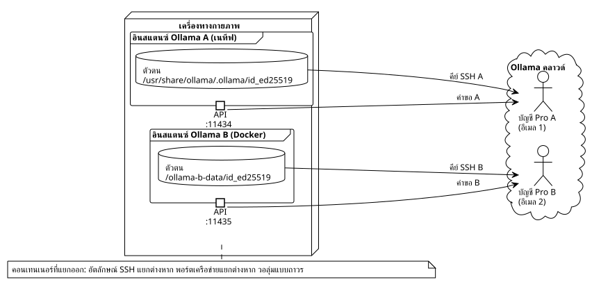

รวมการสมัครสมาชิก Ollama Pro สองรายการบนเครื่องเดียวกันด้วย Docker
เผยแพร่เมื่อ 08 May 2026
การสมัครสมาชิก Pro สองรายการ เครื่องเดียว บัตรเครดิตใบเดียว และไม่มีความขัดแย้งด้านเครือข่ายเลย Docker ทำให้ฉันเพิ่มความจุในการอนุมานบนคลาวด์เป็นสองเท่าโดยไม่ต้องซื้อพีซีเครื่องที่สองได้อย่างไร
บทนำ
ฉันใช้ Ollama Pro มาหลายเดือนเพื่อป้อนโมเดลคลาวด์ให้เซสชัน OpenCode ของฉัน ปัญหาคือ แม้จะมีแพ็กเกจ Pro แล้ว เราก็ถูกจำกัดอย่างรวดเร็วด้วย rate limiting เมื่อเปิดใช้งานเอเจนต์หลายตัวพร้อมกัน ทางออกที่ชัดเจนคือ การสมัครสมาชิกอีกบัญชีหนึ่ง
แต่ตรงนี้แหละคือโศกนาฏกรรม
Ollama ระบุแต่ละเครื่องด้วยคีย์ SSH ที่ไม่ซ้ำกัน — นั่นคือ Device Key อันโด่งดังของมัน สองอินสแตนซ์บน OS เดียวกันจะใช้ตัวตนเดียวกัน และเป็นไปไม่ได้ที่จะผูกสองบัญชี Pro เข้ากับอุปกรณ์เดียวกัน และอย่างที่คุณคงเดา ผมไม่ซื้อแล็ปท็อปเครื่องที่สองเพียงเพื่อเรื่องนี้หรอก
วิธีแก้คือการโกง ทำให้ Ollama เชื่อว่ามันกำลังทำงานอยู่บนเครื่องสองเครื่องที่แตกต่างกัน ทั้งที่จริง ๆ แล้วทั้งสองใช้ CPU, RAM และการเชื่อมต่อเครือข่ายร่วมกัน Docker จะมอบบับเบิลสำหรับการแยกสภาพแวดล้อมที่สมบูรณ์แบบให้เรา

ทำไมสองครั้งสิ่งเดียวกัน?
ก่อนที่คุณจะหาว่าฉันเป็นคนบ้า ให้ฉันอธิบายกรณีการใช้งานก่อน
ด้วยการสมัครสมาชิก Pro เพียงครั้งเดียว ฉันสามารถรันโมเดลเช่น`deepseek-v4-pro:cloud`ในเซสชัน OpenCode ปัญหาเกิดขึ้นเมื่อฉันต้องการ สอง เซสชันพร้อมกัน โควตาการจำกัดอัตราทำให้เซสชันที่สองช้าหรือถูกปฏิเสธไปเลย
ด้วยการสมัครสมาชิก Pro แบบอิสระสองรายการ:
-
เซสชัน OpenCode 1 → บัญชี Pro A (
localhost:11434) -
เซสชัน OpenCode 2 → บัญชี Pro B (
localhost:11435)
แต่ละเซสชันมีโควตาของตัวเอง มีบริบทของตัวเอง และไม่รบกวนกัน นี่คือการประมวลผลหลายงานแบบมนุษย์
|
การสมัครสมาชิก Pro สองรายการ = อีเมลสองอีเมลที่แตกต่างกัน บัตรเครดิตใบเดียวกันใช้ได้ — ระบบชำระเงินของ Ollama ไม่บล็อกการสมัครสมาชิกหลายรายการจากวิธีการชำระเงินเดียวกัน ฉันตรวจสอบแล้ว |
หัวใจของปัญหา: Device Key
เมื่อคุณติดตั้ง Ollama จะมีการสร้างคู่คีย์ SSH ed25519 ขึ้นในไดเรกทอรีข้อมูลระบุตัวตน:
$ cat /usr/share/ollama/.ollama/id_ed25519.pub
ssh-ed25519 AAAAC3NzaC1lZDI1NTE5AAAAI...คีย์นี้ถูกอัปโหลดไปยังเซิร์ฟเวอร์ของ Ollama ในระหว่าง`ollama signin`. เป็นตัวที่บอกว่า « เครื่องนี้เป็นของบัญชี Pro นั้น » หากอินสแตนซ์ทั้งสองของคุณแชร์ไฟล์เดียวกัน`id_ed25519`, พวกเธอมีอัตลักษณ์เดียวกัน จบเกม
วิธีแก้ : ให้อินสแตนซ์ที่สองของเรามีไดเรกทอรีประจำตัวของตัวเอง โดยแยกไว้ในวอลุ่ม Docker
การจัดเตรียม — ทีละขั้นตอน
ข้อกำหนดเบื้องต้น
-
การติดตั้ง Ollama แบบเนทีฟที่ใช้งานได้ (สคริปต์ทางการ`curl | sh`)
-
ติดตั้ง Docker แล้วและใช้งานได้
-
Portainer หรือ docker-compose สำหรับการปรับใช้
-
บัญชี Ollama สองบัญชีที่มีอีเมลแตกต่างกันสองอีเมล
ฉันใช้เวอร์ชัน`0.20.2`— อันที่จัดหาโดยสคริปต์ทางการและอิมเมจ Docker ที่สอดคล้องกัน
ขั้นตอนที่ 1: สร้างโวลุ่ม
ไดเรกทอรีง่ายๆ บนโฮสต์จะทำหน้าที่เป็นวอลุ่มแบบถาวรสำหรับข้อมูลระบุตัวตนของอินสแตนซ์ B:
mkdir -p ~/ollama-b-dataโฟลเดอร์นี้จะถูกเมานต์ไว้ในคอนเทนเนอร์ Docker เป็น`/root/.ollama`, ที่ซึ่ง Ollama เก็บคีย์ระบุตัวตน ประวัติ และโมเดลของมัน
ขั้นตอนที่ 2: เรียกใช้คอนเทนเนอร์ Docker
# docker-compose.yml
services:
ollama-instance-b:
image: ollama/ollama:0.20.2
container_name: ollama-instance-b
ports:
- "11435:11434"
volumes:
- /home/cheroliv/ollama-b-data:/root/.ollama
environment:
- OLLAMA_HOST=0.0.0.0
restart: alwaysสิ่งที่เกิดขึ้นที่นี่:
-
ท่าเรือ11435ของโฮสต์ถูกแมปไปยัง11434ภายในของคอนเทนเนอร์ ดังนั้น อินสแตนซ์ Docker จึงรับฟังบน`:11435`โดยไม่ขัดแย้งกับอินสแตนซ์เนทีฟที่ยึดครองอยู่`:11434`.
-
ปริมาณ`~/ollama-b-data`ถูกติดตั้งบน`/root/.ollama`— นี่คือที่ที่จะจัดเก็บ identity SSH
-
`OLLAMA_HOST=0.0.0.0`อนุญาตให้คอนเทนเนอร์ยอมรับการเชื่อมต่อจากภายนอก
ฉันได้ดีพลอยสแต็กนี้ผ่าน Portainer แต่เพียง`docker compose up -d`ทำงานได้ดีเช่นกัน
ขั้นตอนที่ 3: รับคีย์สาธารณะ
เนื่องจากคอนเทนเนอร์ว่างเปล่าเมื่อเริ่มทำงานครั้งแรก Ollama จะสร้างคู่คีย์ SSH ใหม่โดยอัตโนมัติในโวลุ่ม เราจะดึงคีย์สาธารณะ:
$ docker exec ollama-instance-b cat /root/.ollama/id_ed25519.pub
ssh-ed25519 AAAAC3NzaC1lZDI1NTE5AAAAIDDQ+dvnfmuo49q5O8LOlvgZ39SKORFw47ry9k4H2jPcฉันกำลังตรวจสอบว่าคีย์นี้ แตกต่าง จากคีย์ของอินสแตนซ์เนทีฟ:
# Instance native
$ cat /usr/share/ollama/.ollama/id_ed25519.pub
ssh-ed25519 AAAAC3NzaC1lZDI1NTE5AAAAIGyF...(différente)
# Instance Docker
$ cat ~/ollama-b-data/id_ed25519.pub
ssh-ed25519 AAAAC3NzaC1lZDI1NTE5AAAAIDDQ...(différente)คีย์ที่แตกต่างกันสองอัน ตัวตนที่แยกจากกันสองอย่าง เกมจบแล้ว
|
หากคอนเทนเนอร์ของคุณรีสตาร์ท มันจะ ใช้ซ้ำ คีย์ที่มีอยู่ในโวลุ่ม ตัวตนจะคงอยู่ถาวร คุณจะไม่สูญเสียการเชื่อมโยงกับบัญชี Pro |
ขั้นตอนที่ 4: บันทึกคีย์บน Ollama.com
ไปที่ https://ollama.com/settings/keys → Add SSH Key. วางคีย์สาธารณะของอินสแตนซ์ Docker แล้วยืนยัน
จากนั้น เราจะเชื่อมโยงตัวตนนี้กับบัญชี Pro B:
$ docker exec -it ollama-instance-b ollama signinเบราว์เซอร์เปิดขึ้น เราเข้าสู่ระบบด้วยอีเมลของบัญชี B และโทเคนถูกเชื่อมโยงกับคีย์ SSH ของคอนเทนเนอร์ เราตรวจสอบว่าทุกอย่างเรียบร้อยดี:
$ docker exec -it ollama-instance-b ollama signin
User: cherolivproขั้นตอนที่ 5: ทดสอบด้วยโมเดลขนาดเล็กฟรี
ก่อนจะแจ้งราคาของการสมัครสมาชิก Pro ฉันอยากแน่ใจว่าท่อทำงานได้ ฉันจึงดึงโมเดลโลคัลขนาดเล็กและฟรีมาเพื่อตรวจสอบการเชื่อมต่อ:
$ docker exec ollama-instance-b ollama pull qwen3:0.6b
pulling manifest
pulling 7f4030143c1c: 100% ▕██████████████████▏ 522 MB
success
$ curl -s http://localhost:11435/api/tags
{"models":[{"name":"qwen3:0.6b","model":"qwen3:0.6b",...}]}ท่าเรือ`11435`ตอบกลับ, โมเดลได้รับการให้บริการแล้ว อินสแตนซ์ B ยังมีชีวิตอยู่
เมื่อมั่นใจแล้ว ฉันก็ไปดึงโมเดลคลาวด์ Pro ตัวจริง:
$ docker exec ollama-instance-b ollama pull deepseek-v4-pro:cloud
pulling manifest
pulling 31c3059e137e: 100% ▕██████████████████▏ 344 B
success344 ไบต์สำหรับแมนิเฟสต์ของโมเดลคลาวด์ — ปกติ การอนุมานเกิดขึ้นฝั่งเซิร์ฟเวอร์ ไม่ใช่ในเครื่อง และนี่คือบททดสอบขั้นสุดท้าย :
$ curl -s http://localhost:11435/v1/chat/completions \
-H "Content-Type: application/json" \
-d '{"model":"deepseek-v4-pro:cloud","messages":[{"role":"user","content":"Dis bonjour en une phrase courte."}]}'
{
"id": "chatcmpl-480",
"model": "deepseek-v4-pro",
"choices": [{
"message": { "content": "Bonjour !" },
"finish_reason": "stop"
}],
"usage": { "total_tokens": 181 }
}สวัสดีเช่นกัน อินสแตนซ์ B
กับดักของ API `/v1/models
ฉันเสียเวลา 20 นาทีไปกับรายละเอียดโง่ ๆ ตอนที่ฉันตั้งค่าผู้ให้บริการ`ollama-b`ใน OpenCode ไม่มีอะไรปรากฏในตัวเลือกโมเดลเลย ไม่มีอะไรเลย ไม่มีอะไรทั้งนั้น
เหตุผลหรือ? API`/v1/models`ของอินสแตนซ์ B ที่ส่งคืน`{"object":"list","data":null}`แทนที่จะ`{"object":"list","data":[]}`เมื่อไม่มีโมเดลใดถูกดึงมา ค่า`null`ทำให้การแยกวิเคราะห์ฝั่ง OpenCode ล่ม ซึ่งไม่แสดง provider
ทางแก้คือ: ประกาศโมเดล อย่างชัดเจน ในการกำหนดค่า OpenCode แทนที่จะพึ่งพาการค้นพบแบบไดนามิก
{
"$schema": "https://opencode.ai/config.json",
"provider": {
"ollama": {
"npm": "@ai-sdk/openai-compatible",
"name": "Ollama (local)",
"options": { "baseURL": "http://localhost:11434/v1" },
"models": {
"gemma4:e2b": { "name": "Gemma 4 E2B (local)" }
}
},
"ollama-b": {
"npm": "@ai-sdk/openai-compatible",
"name": "Ollama Instance B (Docker)",
"options": { "baseURL": "http://localhost:11435/v1" },
"models": {
"qwen3:0.6b": { "name": "Qwen3 0.6B (B)" },
"deepseek-v4-pro:cloud": { "name": "DeepSeek V4 Pro (B)" }
}
}
}
}ด้วยการประกาศที่ชัดเจนนี้ OpenCode จะเห็นผู้ให้บริการ B และโมเดลของตนทันที การรีสตาร์ทเซสชัน และตัวเลือก`/models`แสดงทั้งสองอินสแตนซ์เคียงข้างกัน
|
หากคุณไม่เห็นผู้ให้บริการที่กำหนดเองของคุณใน`/models`, อย่าเสียเวลาสามชั่วโมงไปกับการรีสตาร์ทเทอร์มินัลของคุณ ประกาศโมเดลด้วยตนเองใน`opencode.json`— มันแก้ปัญหาได้ทันที |
ผลลัพธ์: สองเซสชัน สองบัญชี ไม่มีความขัดแย้ง
สุดท้ายแล้ว ฉันสามารถเปิดสองเซสชัน OpenCode พร้อมกันได้:
Session 1 → /models → Ollama (local) → deepseek-v4-pro:cloud → Compte A
Session 2 → /models → Ollama Instance B (Docker) → deepseek-v4-pro:cloud → Compte Bแต่ละเซสชันมีโควตาของตัวเอง มีขีดจำกัดอัตราของตัวเอง และไม่ก้าวก่ายกันและกัน เครื่องเดียวกัน บัตรเครดิตใบเดียวกัน อีเมลสองอันที่ต่างกัน
แล้วสิ่งที่ดีที่สุดล่ะ? คอนเทนเนอร์ Docker อยู่ใน`restart: always`. มันคงอยู่ต่อไปแม้ระบบจะรีบูตโดยไม่ต้องมีการแทรกแซงด้วยมือ
บทเรียนที่ได้รับ
-
Docker แยกทุกสิ่งออกจากกัน แม้กระทั่งตัวตน— การ bind mount วอลุ่มแบบง่าย ๆ ก็เพียงพอที่จะทำให้คอนเทนเนอร์มีชุดคีย์ SSH ของตัวเอง ทำให้มันแยกไม่ออกจากเครื่องกายภาพเครื่องอื่นในสายตาของ Ollama
-
อีเมลสองฉบับ ใช้บัตรเครดิตใบเดียวกัน— Ollama ไม่บล็อกการสมัครสมาชิกหลายรายการที่ใช้วิธีการชำระเงินเดียวกัน เฉพาะอีเมลเท่านั้นที่ต้องไม่ซ้ำกัน
-
ทดลองใช้ฟรีก่อนชำระเงิน — Un
ollama pull qwen3:0.6b(modèle libre, 522 Mo) permet de valider toute la chaîne réseau sans débourser un centime. Vous validez le plomberie d’abord, vous activez le Pro ensuite. -
/v1/models` ที่มี
data: nullทำให้ OpenCode พัง— หากคุณกำหนดค่าผู้ให้บริการที่กำหนดเองด้วย`"models": {}`, OpenCode พยายามค้นหาโมเดลผ่าน API หาก API ตอบกลับ`data: null`, ผู้ให้บริการไม่ปรากฏขึ้น โปรดประกาศโมเดลอย่างชัดเจน -
สองบัญชีก็คือการประมวลผลหลายอย่างแบบมนุษย์— บัญชี Pro หนึ่งบัญชี = หนึ่งเซสชัน OpenCode ที่ใช้งานอยู่ สองบัญชี = สองเซสชันแบบขนาน สำหรับคนที่ต้องสลับไปมาระหว่างโปรเจกต์ Gradle หลายโปรเจกต์พร้อมกัน นี่คือตัวเปลี่ยนเกม